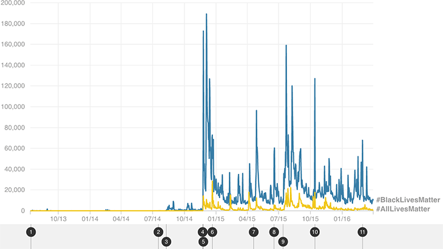

#BlackLivesMatter Has Been Used Eight Times As Often As #AllLivesMatter
Number of Twitter posts mentioning each hashtag between July 12, 2013, and March 31, 2016

Major Dates
- 1
July 13, 2013
#BlackLivesMatter first appears on Twitter.
- 2
July 17, 2014
Eric Garner dies in N.Y. after being arrested.
- 3
Aug. 9, 2014
Michael Brown is killed during an encounter with a police officer in Ferguson, Mo.
- 4
Nov. 22, 2014
Tamir Rice is killed by police in Cleveland while playing with a toy gun.
- 5
Nov. 24, 2014
Prosecutor announces there will be no indictment in Michael Brown case.
- 6
Dec. 20, 2014
Two police officers are killed in N.Y. while sitting in their patrol car.
- 7
April 19, 2015
Freddie Gray dies in Baltimore while in police custody.
- 8
June 17, 2015
Shooting at church in Charleston, S.C., kills 9 people.
- 9
July 13, 2015
Sandra Bland is found hanged in Texas jail cell.
- 10
Oct. 13, 2015
Bernie Sanders defends #BlackLivesMatter in debate.
- 11
Feb. 28, 2016
2016 Oscars